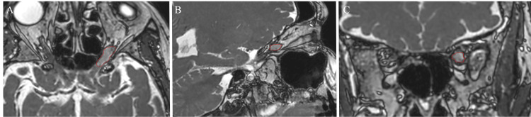

431 — U thần kinh thị: glioma vs meningioma / Optic glioma vs Sheath meningioma
Tags: pattern:u-TK-thi vung:than-kinh-thi
Mức chắc chắn (certainty): tổng hợp y văn (literature synthesis) — nhóm tự biên từ y văn mở, chưa gắn ca nguyên văn đơn lẻ.
1. Tổng quan — trong trục vs quanh trục + tram-track
- Glioma TK thị: TRONG trục TK (trẻ + NF1), phình hình thoi (fusiform), gập khúc (kink) — mổ = mù (cắt cả TK), xạ khi tiến triển.
- Meningioma bao TK (ONSM): QUANH trục TK (già), tram-track (2 đường ngấm quanh TK đen) + vôi hóa — xạ lập thể (SRS) là chuẩn, mổ = mù.
- TẠI SAO phân biệt sống còn: glioma mổ cắt TK (mất thị lực hoàn toàn), ONSM xạ giữ TK; chẩn đoán nhầm = mù oan.
- Số: ONSM ~2% u ổ mắt; SRS kiểm soát ~96–100%, thị lực cải thiện ≥ 50% nếu thị lực trước xạ còn tốt.
2. Gamut khối quanh TK thị
- Glioma (trẻ NF1): fusiform + kink + trong trục — theo dõi/xạ khi tiến triển.
- ONSM (già): tram-track + vôi hóa + quanh trục — SRS (25 Gy/5 phân liều mẫu).
- Viêm (sarcoid/GPA): ngấm TK + toàn thân — steroid/sinh thiết.
- Lymphoma: ngấm + tuổi già + ngoài ổ mắt — sinh thiết.
3. Bảng so sánh
| Thực thể (entity) | Hình ảnh (MRI) | Chốt vào (rule-in) | Chốt loại (rule-out) | Gợi ý xác nhận |
|---|---|---|---|---|
| Glioma | Fusiform + kink, TRONG trục, trẻ NF1 | Trẻ + NF1 + fusiform | Quanh trục + vôi hóa → ONSM | Theo dõi/xạ khi tiến triển |
| ONSM | Tram-track + vôi hóa, QUANH trục, già | Tram-track + già + tiến triển chậm | Trong trục + trẻ → glioma | SRS (tránh mổ cắt TK) |
| Viêm TK | Ngấm + đau + toàn thân | Đau + cấp + đáp ứng steroid (bài 430) | Không đau + mạn + tram-track → u | (bài 430) |

SSFP: tổn thương ngấm quanh TK thị trái gần đỉnh + giãn bao. Nguồn: Chaga et al., Cureus 2025 Fig. 1, CC BY 4.0.4. Protocol MRI TK thị-u
- T1/T2 fatsat + cản quang 3 bình diện + GRE (vôi hóa) — trong vs quanh trục là lát cắt quyết định.
- SRS ONSM: 25 Gy/5 phân liều mẫu, giới hạn TK/giao thoa (D0.035cc), theo dõi thị lực + thể tích (giảm 44% mẫu).
- Glioma NF1: theo dõi định kỳ, xạ khi đe dọa thị lực còn lại.
5. Cạm bẫy
- Sinh thiết/mổ ONSM = mù — chẩn đoán hình ảnh + SRS, không mổ lấy mô thường quy.
- Glioma người lớn hiếm nhưng ác tính hơn trẻ — đừng chủ quan tuổi.
- Vôi hóa TK thị cũng gặp viêm mạn/lao — bối cảnh + tram-track quyết định.
- Bánh vòng (doughnut) mặt coronal mới đủ cặp với tram-track axial — 1 mặt chưa chốt ONSM.
- Giả tăng tín hiệu TK ở ống thị giác do nhiễu khí xoang bướm/sàng trên DWI/T2 fatsat — COR STIR hoặc DIXON mới đọc (đừng gọi viêm!).
6. Tự lượng giá — Blind Quiz
Ca 1 — Nữ 68 tuổi lồi mắt + đau, khối ngấm quanh TK thị trái. Đọc MRI.
- Hỏi: trong hay quanh trục? Tram-track có không? Mổ hay xạ? Vì sao?
Bấm để hiện đáp án
- ONSM: quanh trục + giãn bao — SRS (không mổ), giảm 44% thể tích mẫu; mổ cắt TK = mù.
- Nguồn: Chaga et al., Fig. 1, CC BY 4.0.
Ca 2 — Bé NF1 + khối fusiform trong trục TK thị: glioma hay ONSM? Xử trí? (Bảng mục 3.)
Bấm để hiện đáp án
- Glioma: trẻ NF1 + trong trục + kink — theo dõi, xạ khi tiến triển đe dọa thị lực.
Bài liên quan chéo
- 400 – Tổng quan Mắt
- 430 – Đường thị giác (viêm cấp)
- 460 – Can thiệp + xạ (đã có) (SRS)
Không dùng để chẩn đoán độc lập khi chưa có người hướng dẫn.